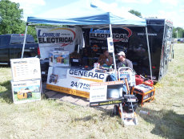
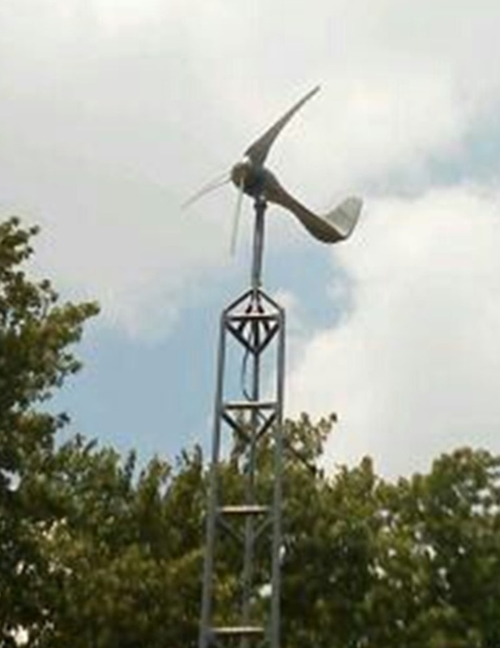
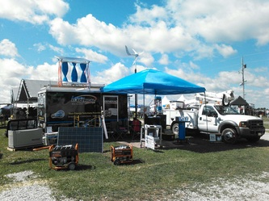
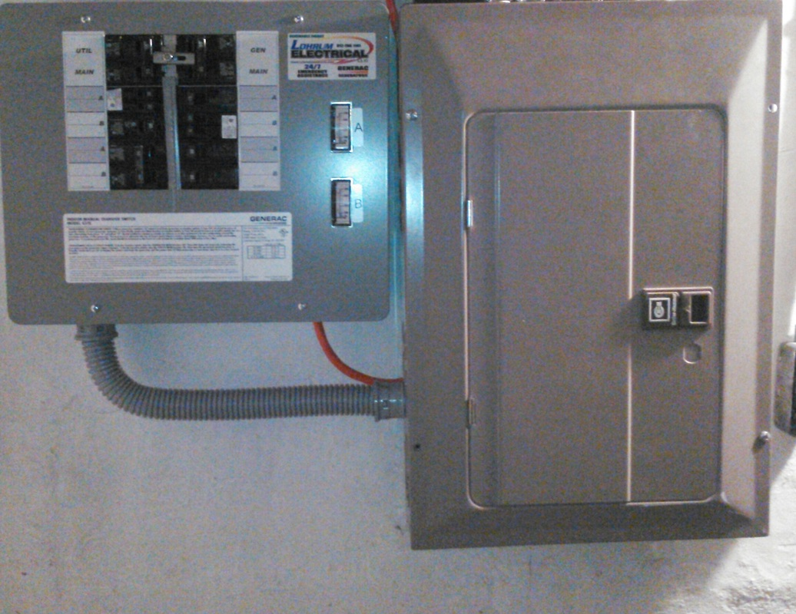
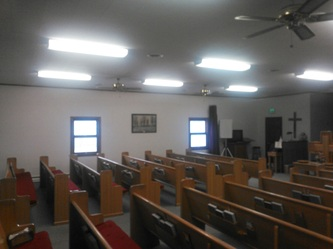
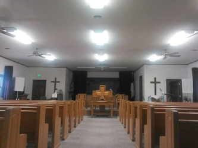
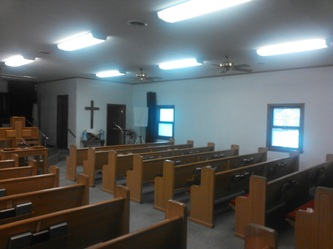
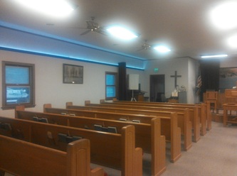
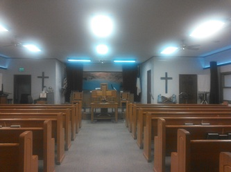
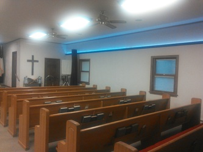

THE LOHRUM PROJECT COLLECTION
Power.
In pictures.
Electrical details, lighting transformations,
backup power, and energy in the community.
Your energy solutions provider.
24–7 emergency service.











A LIGHTING TRANSFORMATION
Hilltop Baptist Church.
The three older lights weren’t very efficient.
The new lighting includes sidewall prayer lights.
01 Before · Older lights






02 After · New lighting & sidewall prayer lights






YOUR NEXT STEP